The following is a complete list of the mathematical functions which are defined by default within PyXPlot.
abs( )
)
The abs() function returns the absolute magnitude of , where may be any general complex number. The output shares the physical dimensions of , if any.
acos()
The acos() function returns the arccosine of , where may be any general dimensionless complex number. The output has physical dimensions of angle.
acosh()
The acosh() function returns the hyperbolic arccosine of , where may be any general dimensionless complex number. The output has physical dimensions of angle.
acot()
The acot() function returns the arccotangent of , where may be any general dimensionless complex number. The output has physical dimensions of angle.
acoth()
The acoth() function returns the hyperbolic arccotangent of , where may be any general dimensionless complex number. The output has physical dimensions of angle.
acsc()
The acsc() function returns the arccosecant of , where may be any general dimensionless complex number. The output has physical dimensions of angle.
acsch()
The acsch() function returns the hyperbolic arccosecant of , where may be any general dimensionless complex number. The output has physical dimensions of angle.
airy_ai()
The airy_ai() function returns the Airy function Ai evaluated at , where may be any dimensionless complex number.
airy_ai_diff()
The airy_ai_diff() function returns the first derivative of the Airy function Ai evaluated at , where may be any dimensionless complex number.
airy_bi()
The airy_bi() function returns the Airy function Bi evaluated at , where may be any dimensionless complex number.
airy_bi_diff()
The airy_bi_diff() function returns the first derivative of the Airy function Bi evaluated at , where may be any dimensionless complex number.
arg()
The arg() function returns the argument of the complex number , which may have any physical dimensions. The output has physical dimensions of angle.
asec()
The asec() function returns the arcsecant of , where may be any general dimensionless complex number. The output has physical dimensions of angle.
asech()
The asech() function returns the hyperbolic arcsecant of , where may be any general dimensionless complex number. The output has physical dimensions of angle.
asin()
The asin() function returns the arcsine of , where may be any general dimensionless complex number. The output has physical dimensions of angle.
asinh()
The asinh() function returns the hyperbolic arcsine of , where may be any general dimensionless complex number. The output has physical dimensions of angle.
ast_Lcdm_age( ,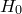,
,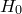, )
)
The ast_Lcdm_age(,,) function is a specialist cosmology function. It returns the current age of the Universe in a standard 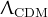 cosmology with specified values for Hubble’s constant, and . Hubble’s constant should be specified either with physical units of recession velocity per unit distance, or as a dimensionless number, assumed to have implicit units of km/s/Mpc. Suitable input values for a standard cosmology are:  ,
,  and 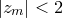. For more details, see David W. Hogg’s short article Distance measures in cosmology, available online at:
and 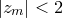. For more details, see David W. Hogg’s short article Distance measures in cosmology, available online at:
http://arxiv.org/abs/astro-ph/9905116.
ast_Lcdm_angscale(,,,)
The ast_Lcdm_angscale(,,,) function is a specialist cosmology function. It returns the angular scale of the sky at a redshift of in a standard cosmology. For details, see the ast_Lcdm_age() function above. The returned value has dimensions of distance per unit angle.
ast_Lcdm_DA(,,,)
The ast_Lcdm_DA(,,,) function is a specialist cosmology function. It returns the angular size distance of objects at a redshift of in a standard cosmology. For details, see the ast_Lcdm_age() function above. The returned value has dimensions of distance.
ast_Lcdm_DL(,,,)
The ast_Lcdm_DL(,,,) function is a specialist cosmology function. It returns the luminosity distance of objects at a redshift of in a standard cosmology. For details, see the ast_Lcdm_age() function above. The returned value has dimensions of distance.
ast_Lcdm_DM(,,,)
The ast_Lcdm_DM(,,,) function is a specialist cosmology function. It returns the proper motion distance of objects at a redshift of in a standard cosmology. For details, see the ast_Lcdm_age() function above. The returned value has dimensions of distance.
ast_Lcdm_t(,,,)
The ast_Lcdm_t(,,,) function is a specialist cosmology function. It returns the lookback time to objects at a redshift of in a standard cosmology. For details, see the ast_Lcdm_age() function above. The returned value has dimensions of time. To find the age of the Universe at a redshift of , this value should be subtracted from the output of the ast_Lcdm_age() function.
ast_Lcdm_z( ,,,)
,,,)
The ast_Lcdm_z(,,,) function is a specialist cosmology function. It returns the redshift corresponding to a lookback time of in a standard cosmology. For details, see the ast_Lcdm_age() function above. The returned value is dimensionless.
ast_moonphase(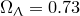)
The ast_moonphase() function returns the phase of the Moon, with dimensions of angle, at the time corresponding to the supplied Julian Day number.
ast_sidereal_time()
The ast_sidereal_time() function returns the sidereal time at Greenwich, with dimensions of angle, at the time corresponding to the supplied Julian Day number. This is equal to the right ascension of the stars which are transiting the Greenwich meridian at that time. This function uses the expression for sidereal time adopted in 1982 by the International Astronomical Union (IAU), and which is reproduced in Chapter 12 of Jean Meeus’ book Astronomical Algorithms (1998).
atan()
The atan() function returns the arctangent of , where may be any general dimensionless complex number. The output has physical dimensions of angle.
atanh()
The atanh() function returns the hyperbolic arctangent of , where may be any general dimensionless complex number. The output has physical dimensions of angle.
atan2(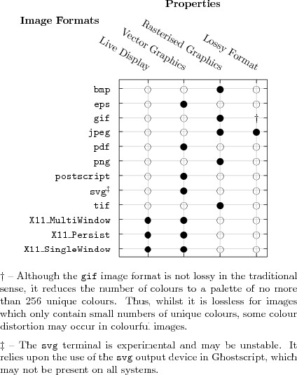)
The atan2() function returns the arctangent of 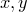. Unlike atan(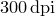), atan2() takes account of the signs of both  and
and  to remove the degeneracy between
to remove the degeneracy between  and
and  . and must be real numbers, and must have matching physical dimensions.
. and must be real numbers, and must have matching physical dimensions.
besseli( )
)
The besseli() function evaluates the  th regular modified spherical Bessel function at . must be a positive dimensionless real integer. must be a real dimensionless number.
th regular modified spherical Bessel function at . must be a positive dimensionless real integer. must be a real dimensionless number.
besselI()
The besselI() function evaluates the th regular modified cylindrical Bessel function at . must be a positive dimensionless real integer. must be a real dimensionless number.
besselj()
The besselj() function evaluates the th regular spherical Bessel function at . must be a positive dimensionless real integer. must be a real dimensionless number.
besselJ()
The besselJ() function evaluates the th regular cylindrical Bessel function at . must be a positive dimensionless real integer. must be a real dimensionless number.
besselk()
The besselk() function evaluates the th irregular modified spherical Bessel function at . must be a positive dimensionless real integer. must be a real dimensionless number.
besselK()
The besselK() function evaluates the th irregular modified cylindrical Bessel function at . must be a positive dimensionless real integer. must be a real dimensionless number.
bessely()
The bessely() function evaluates the th irregular spherical Bessel function at . must be a positive dimensionless real integer. must be a real dimensionless number.
besselY()
The besselY() function evaluates the th irregular cylindrical Bessel function at . must be a positive dimensionless real integer. must be a real dimensionless number.
beta(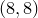)
The beta() function evaluates the beta function 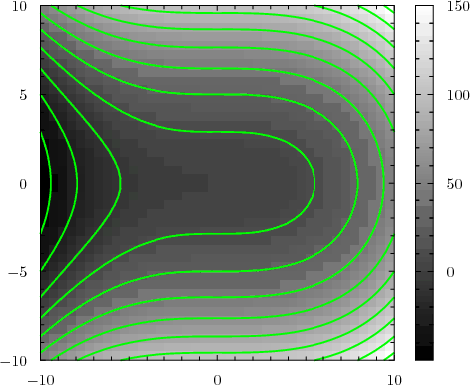, where  and
and  must be dimensionless real numbers.
must be dimensionless real numbers.
binomialCDF(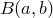)
The binomialCDF() function evaulates the probability of getting fewer than or exactly 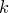 successes out of  trials in a binomial distribution with success probability 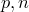. and must be positive real integers. must be a real number in the range
trials in a binomial distribution with success probability 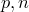. and must be positive real integers. must be a real number in the range  .
.
binomialPDF()
The binomialPDF() function evaulates the probability of getting successes out of trials in a binomial distribution with success probability . and must be positive real integers. must be a real number in the range .
Bv(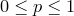)
The Bv() function returns the power emitted by a blackbody of temperature  at frequency 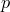 per unit area, per unit solid angle, per unit frequency. should have physical dimensions of temperature, or be a dimensionless number, in which case it is understood to be a temperature in Kelvin. should have physical dimensions of frequency, or be a dimensionless number, in which case it is understood to be a frequency measured in Hertz. The output has physical dimensions of power per unit area per unit solid angle per unit frequency.
at frequency 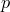 per unit area, per unit solid angle, per unit frequency. should have physical dimensions of temperature, or be a dimensionless number, in which case it is understood to be a temperature in Kelvin. should have physical dimensions of frequency, or be a dimensionless number, in which case it is understood to be a frequency measured in Hertz. The output has physical dimensions of power per unit area per unit solid angle per unit frequency.
Bvmax()
The Bvmax() function returns the frequency at which the function Bv() reaches its maximum, as calculated by the Wien Displacement Law. The inputs are subject to the same constraints as above.
ceil()
The ceil() function returns the smallest integer value greater than or equal to , where must be a dimensionless real number.
chisqCDF( )
)
The chisqCDF() function returns the cumulative probability density at in a 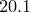-squared distribution with degrees of freedom. must be a positive real dimensionless integer. must be a positive real dimensionless number.
chisqCDFi( )
)
The chisqCDFi() function returns the point at which the cumulative probability density in a -squared distribution with degrees of freedom is 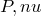. must be a positive real dimensionless integer. must be a real number in the range .
chisqPDF()
The chisqPDF() function returns the probability density at in a -squared distribution with degrees of freedom. must be a positive real dimensionless integer. must be a positive real dimensionless number.
conditionalN( )
)
The conditionalN() function returns either , if is true, or  otherwise. Arguments and may be complex and may have any physical dimensions, but may not be strings. Argument must be a dimensionless real number.
otherwise. Arguments and may be complex and may have any physical dimensions, but may not be strings. Argument must be a dimensionless real number.
conditionalS()
The conditionalS() function returns either , if is true, or otherwise. Arguments and should be string variables or expressions. Argument must be a dimensionless real number.
conjugate()
The conjugate() function returns the complex conjugate of the complex number , which may have any physical dimensions.
cos()
The cos() function returns the cosine of , where may be any complex number and must either have physical dimensions of angle or be a dimensionless number, in which case it is understood to be measured in radians.
cosh()
The cosh() function returns the hyperbolic cosine of , where may be any complex number and must either have physical dimensions of angle or be a dimensionless number, in which case it is understood to be measured in radians.
cot()
The cot() function returns the cotangent of , where may be any complex number and must either have physical dimensions of angle or be a dimensionless number, in which case it is understood to be measured in radians.
coth()
The coth() function returns the hyperbolic cotangent of , where may be any complex number and must either have physical dimensions of angle or be a dimensionless number, in which case it is understood to be measured in radians.
csc()
The csc() function returns the cosecant of , where may be any complex number and must either have physical dimensions of angle or be a dimensionless number, in which case it is understood to be measured in radians.
csch()
The csch() function returns the hyperbolic cosecant of , where may be any complex number and must either have physical dimensions of angle or be a dimensionless number, in which case it is understood to be measured in radians.
degrees()
The degrees() function takes a real input which should either have physical units of angle, or be dimensionless, in which case it is assumed to be measured in radians. The output is the dimensionless number of degrees in .
diff_dx(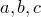)
The diff_dx() function numerically differentiates an expression  with respect to at , using a step size of 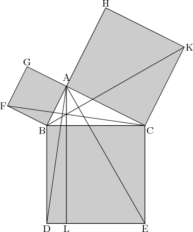. ‘x’ can be replaced by any variable name of fewer than 16 characters, and so, for example, the diff_dfoobar() function differentiates an expression with respect to the variable foobar. The expression may optionally be enclosed in quotes. Both , and the output differential, may be complex numbers with any physical unit. The step size may optionally be omitted, in which case a value of
with respect to at , using a step size of 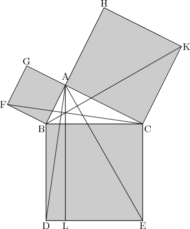. ‘x’ can be replaced by any variable name of fewer than 16 characters, and so, for example, the diff_dfoobar() function differentiates an expression with respect to the variable foobar. The expression may optionally be enclosed in quotes. Both , and the output differential, may be complex numbers with any physical unit. The step size may optionally be omitted, in which case a value of  is used. The following example would differentiate the expression 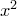 with respect to :
is used. The following example would differentiate the expression 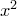 with respect to :
print diff_dx("x**2", 1, 1e-6).
ellipticintE()
The ellipticintE() function evaluates the following complete elliptic integral:
![\[ E(k) = \int _0^1 \sqrt {\frac{1-k^2 t^2}{1-t^2}}\, \mathrm{d}t. \]](images/img-0549.png) |
ellipticintK()
The ellipticintK() function evaluates the following complete elliptic integral:
| 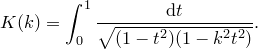 |
ellipticintP( )
)
The ellipticintP() function evaluates the following complete elliptic integral:
![\[ P(k,n) = \int _0^{\nicefrac {\pi }{2}} \frac{\mathrm{d}\theta }{(1+n\sin ^2\theta )(1-k^2\sin ^2\theta )}. \]](images/img-0552.png) |
erf()
The erf() function evaluates the error function at , where must be a dimensionless real number.
erfc()
The erfc() function evaluates the complementary error function at , where must be a dimensionless real number.
exp()
The exp() function returns 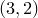, where can be a complex number but must either be dimensionless or be an angle.
expint( )
)
The expint() function evaluates the following integral:
| 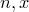 |
must be a positive real dimensionless integer and must be a real dimensionless number.
expm1()
The expm1() function accurately evaluates 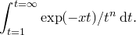, where must be a dimensionless real number.
floor()
The floor() function returns the largest integer value smaller than or equal to , where must be a dimensionless real number.
gamma()
The gamma() function evaluates the gamma function 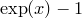, where must be a dimensionless real number.
gaussianCDF(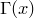)
The gaussianCDF() function evaluates the Gaussian cumulative distribution function of standard deviation 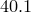 at . The distribution is centred upon  . and must both be real, but may have any physical dimensions so long as they match.
. and must both be real, but may have any physical dimensions so long as they match.
gaussianCDFi()
The gaussianCDFi() function evaluates the inverse Gaussian cumulative distribution function of standard deviation at . The distribution is centred upon . and must both be real, but may have any physical dimensions so long as they match.
gaussianPDF()
The gaussianPDF() function evaluates the Gaussian probability density function of standard deviation at . The distribution is centred upon . and must both be real, but may have any physical dimensions so long as they match.
heaviside()
The heaviside() function returns the Heaviside function, defined to be one for and zero otherwise. must be a dimensionless real number.
hyperg_0F1()
The hyperg_0F1() function evaluates the hypergeometric function 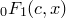. All inputs must be dimensionless real numbers. For reference, the implementation used is GSL’s gsl_sf_hyperg_0F1 function.
hyperg_1F1()
The hyperg_1F1() function evaluates the hypergeometric function 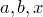. All inputs must be dimensionless real numbers. For reference, the implementation used is GSL’s gsl_sf_hyperg_1F1 function.
hyperg_2F0()
The hyperg_2F0() function evaluates the hypergeometric function  . All inputs must be dimensionless real numbers.For reference, the implementation used is GSL’s gsl_sf_hyperg_2F0 function.
. All inputs must be dimensionless real numbers.For reference, the implementation used is GSL’s gsl_sf_hyperg_2F0 function.
hyperg_2F1()
The hyperg_2F1() function evaluates the hypergeometric function 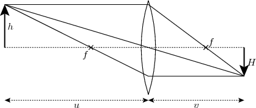. All inputs must be dimensionless real numbers. For reference, the implementation used is GSL’s gsl_sf_hyperg_2F1 function. This implementation cannot evaluate the region  .
.
hyperg_U()
The hyperg_U() function evaluates the hypergeometric function 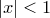. All inputs must be dimensionless real numbers. For reference, the implementation used is GSL’s gsl_sf_hyperg_U function.
hypot()
The hypot() function returns the quadrature sum of and , 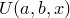, where and may have any physical dimensions so long as they match, and can be complex numbers.
Im()
The Im() function returns the imaginary part of the complex number , which may have any physical units. The number returned shares the same physical units as .
int_dx(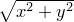)
The int_dx() function numerically integrates an expression with respect to between  and
and  . ‘x’ can be replaced by any variable name of fewer than 16 characters, and so, for example, the int_dfoobar() function integrates an expression with respect to the variable foobar. The expression may optionally be enclosed in quotes. and may have any physical units, so long as they match, but must be real numbers. The output integral may be a complex number, and may have any physical dimensions. The following example would integrate the expression with respect to between
. ‘x’ can be replaced by any variable name of fewer than 16 characters, and so, for example, the int_dfoobar() function integrates an expression with respect to the variable foobar. The expression may optionally be enclosed in quotes. and may have any physical units, so long as they match, but must be real numbers. The output integral may be a complex number, and may have any physical dimensions. The following example would integrate the expression with respect to between  m and 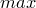 m:
m and 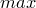 m:
print int_dx("x**2", 1*unit(m), 2*unit(m)).
jacobi_cn( )
)
The jacobi_cn() function evaluates a Jacobi elliptic function; it returns the value 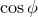 where is defined by the integral
| 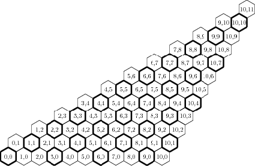 |
jacobi_dn()
The jacobi_dn() function evaluates a Jacobi elliptic function; it returns the value 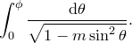 where is defined by the integral
jacobi_sn()
The jacobi_sn() function evaluates a Jacobi elliptic function; it returns the value  where is defined by the integral
where is defined by the integral
lambert_W0()
The lambert_W0() function evaluates the principal real branch of the Lambert W function, for which 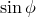 when  .
.
lambert_W1()
The lambert_W1() function evaluates the secondary real branch of the Lambert W function, for which 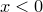 when .
ldexp()
The ldexp() function returns times 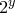 for integer y, where both and must be real.
legendreP()
The legendreP() function evaluates the th Legendre polynomial at , where must be a positive dimensionless real integer and must be a real dimensionless number.
legendreQ()
The legendreQ() function evaluates the th Legendre function at , where must be a positive dimensionless real integer and must be a real dimensionless number.
log()
The log() function returns the natural logarithm of , where may be any complex dimensionless number.
log10()
The log10() function returns the logarithm to base 10 of , where may be any complex dimensionless number.
lognormalCDF( )
)
The lognormalCDF() function evaluates the log normal cumulative distribution function of standard deviation , centred upon 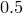, at . must be real, positive and dimenionless. and must both be real, but may have any physical dimensions so long as they match.
lognormalCDFi()
The lognormalCDFi() function evaluates the inverse log normal cumulative distribution function of standard deviation , centred upon , at . must be real, positive and dimenionless. and must both be real, but may have any physical dimensions so long as they match.
lognormalPDF()
The lognormalPDF() function evaluates the log normal probability density function of standard deviation , centred upon , at . must be real, positive and dimenionless. and must both be real, but may have any physical dimensions so long as they match.
max()
The max() function returns the greater of the two values and , where and may have any physical dimensions so long as they match. If either input is complex, the input with the larger magnitude is returned.
min()
The min() function returns the lesser of the two values and , where and may have any physical dimensions so long as they match. If either input is complex, the input with the smaller magnitude is returned.
mod()
The mod() function returns the remainder of , where and may have any physical dimensions so long as they match but must both be real.
ordinal()
The ordinal() function returns an ordinal string, for example, “1st”, “2nd” or “3rd”, for any positive dimensionless real number .
poissonCDF(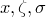)
The poissonCDF() function returns the probability of getting 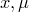 from a Poisson distribution with mean 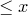, where must be real, positive and dimensionless and must be real and dimensionless.
poissonPDF()
The poissonPDF() function returns the probability of getting from a Poisson distribution with mean , where must be real, positive and dimensionless and must be a real dimensionless integer.
pow()
The pow() function returns to the power of , where and may both be complex numbers and may have any physical dimensions but must be dimensionless. It not not permitted for to be complex if is not dimensionless, since this would lead to an output with complex physical dimensions.
radians()
The radians() function takes a real input which should either have physical units of angle, or be dimensionless, in which case it is assumed to be measured in degrees. The output is the dimensionless number of radians in .
random()
The random() function returns a random real number between 0 and 1.
random_binomial(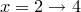)
The random_binomial() function returns a random sample from a binomial distribution with independent trials and a success probability . must be a real positive dimensionless integer. must be a dimensionless number in the range 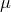.
random_chisq()
The random_chisq() function returns a random sample from a -squared distribution with degrees of freedom, where must be a real positive dimensionless integer.
random_gaussian()
The random_gaussian() function returns a random sample from a Gaussian (normal) distribution of standard deviation and centred upon zero. must be real, but may have any physical units. The returned random sample shares the physical units of .
random_lognormal(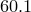)
The random_lognormal() function returns a random sample from the log normal distribution centred on , and of width . must be a real positive dimensionless number. must be real, but may have any physical units. The returned random sample shares the physical units of .
random_poisson()
The random_poisson() function returns a random integer from a Poisson distribution with mean , where must be a real positive dimensionless number.
random_tdist()
The random_tdist() function returns a random sample from a -distribution with degrees of freedom, where must be a real positive dimensionless integer.
Re()
The Re() function returns the real part of the complex number , which may have any physical units. The number returned shares the same physical units as .
root()
The root() function returns the th root of . may be any complex number, and may have any physical dimensions. must be a dimensionless integer. When complex arithmetic is enabled, and whenever is positive, this function is entirely equivalent to pow(z,1/n). However, when is negative and complex arithmetic is disabled, the expression pow(z,1/n) may not be evaluated, since it will in general have a small imaginary part for any finite-precision floating-point representation of 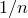. The expression root(z,n), on the other hand, may be evaluated under such conditions, providing that is an odd integer.
sec()
The sec() function returns the secant of , where may be any complex number and must either have physical dimensions of angle or be a dimensionless number, in which case it is understood to be measured in radians.
sech()
The sech() function returns the hyperbolic secant of , where may be any complex number and must either have physical dimensions of angle or be a dimensionless number, in which case it is understood to be measured in radians.
sin()
The sin() function returns the sine of , where may be any complex number and must either have physical dimensions of angle or be a dimensionless number, in which case it is understood to be measured in radians.
sinc()
The sinc() function returns the sinc function  for any complex number , which may either be dimensionless, in which case it is understood to be measured in radians, or have physical dimensions of angle. The result is dimensionless.
for any complex number , which may either be dimensionless, in which case it is understood to be measured in radians, or have physical dimensions of angle. The result is dimensionless.
sinh()
The sinh() function returns the hyperbolic sine of , where may be any complex number and must either have physical dimensions of angle or be a dimensionless number, in which case it is understood to be measured in radians.
sqrt()
The sqrt() function returns the square root of , which may be any complex number and may have any physical dimensions.
strcmp(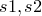)
The strcmp() function returns zero if the strings 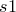 and 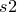 are the same, one if should be placed after in alphabetical sequence, minus one if should be placed before in alphabetical sequence.
strlen( )
)
The strlen() function returns the length of the string .
strlower()
The strlower() function returns a version of the string in which all alphabetic characters are converted to lowercase.
strrange()
The strrange() function returns a slice of the string containing only the  th through until the
th through until the  th characters of the string. If either or are negative, they are counted from the end of the string; for example,
th characters of the string. If either or are negative, they are counted from the end of the string; for example,  refers to the last character of the string.
refers to the last character of the string.
strupper()
The strupper() function returns a version of the string in which all alphabetic characters are converted to uppercase.
tan()
The tan() function returns the tangent of , where may be any complex number and must either have physical dimensions of angle or be a dimensionless number, in which case it is understood to be measured in radians.
tanh()
The tanh() function returns the hyperbolic tangent of , where may be any complex number and must either have physical dimensions of angle or be a dimensionless number, in which case it is understood to be measured in radians.
tdistCDF()
The tdistCDF() function returns the cumulative probability density at in a -distribution with degrees of freedom. must be a positive real dimensionless integer. must be a positive real dimensionless number.
tdistCDFi()
The tdistCDFi() function returns the point at which the cumulative probability density in a -distribution with degrees of freedom is . must be a positive real dimensionless integer. must be a real number in the range .
tdistPDF()
The tdistPDF() function returns the probability density at in a -distribution with degrees of freedom. must be a positive real dimensionless integer. must be a positive real dimensionless number.
texify(…)
The texify(…) function returns a string of LaTeX text corresponding to the algebraic expression or string supplied between the brackets.
time_daymonth(JD)
The time_daymonth(JD) function returns the number of the day of the month on which the supplied Julian Day number falls. For more details see the time_julianday() function.
time_dayweekname(JD)
The time_dayweekname(JD) function returns as a string the name of the day of the week on which the supplied Julian Day number falls. For more details see the time_julianday() function.
time_dayweeknum(JD)
The time_dayweeknum(JD) function returns the number, in the range 1 (Sunday) to 7 (Saturday), of the day of the week on which the supplied Julian Day number falls. For more details see the time_julianday() function.
time_diff(JD,JD)
The time_diff(JD,JD) function returns the time interval elapsed between the first and second supplied Julian Day numbers. For more details see the time_julianday() function.
time_diff_string(JD,JD,format)
The time_diff_string(JD,JD,format) function returns a string representation of the time interval elapsed between the first and second supplied Julian Day numbers. For more details about Julian Day numbers, see the time_julianday() function. The third input is used to control the format of the output, with the following tokens being substituted for:
Token |
Value |
|---|---|
%% |
A literal % sign. |
%d |
The number of days elapsed, modulo 365. |
%D |
The number of days elapsed. |
%h |
The number of hours elapsed, modulo 24. |
%H |
The number of hours elapsed. |
%m |
The number of minutes elapsed, modulo 60. |
%M |
The number of minutes elapsed. |
%s |
The number of seconds elapsed, modulo 60. |
%S |
The number of seconds elapsed. |
%Y |
The number of years elapsed. |
time_hour(JD)
The time_hour(JD) function returns the integer hour of the day, in the range 0-23, in which the supplied Julian Day number falls. For more details see the time_julianday() function.
time_julianday(year,month,day,hour,min,sec)
The time_julianday(year,month,day,hour,min,sec) function returns the Julian Day number corresponding to the supplied time and date. Each field should be supplied numerically as an integer: for example, the month argument should be an integer in the range 1-12. In the default British calendar, the year argument should be the number of years elapsed since the Christian epoch. To enter dates before AD 1,  should be passed to indicate the year 1 BC, should be passed to indicate the year 2 BC, and so forth. Dates may be entered in other calendars using the set calendar command.
should be passed to indicate the year 1 BC, should be passed to indicate the year 2 BC, and so forth. Dates may be entered in other calendars using the set calendar command.
Julian Day numbers are defined to be the number of days elapsed since noon on 1st January, 4713 BC in the Julian Calendar. Consequently, Julian Day numbers are rather large numbers: for example, midnight on 1st January 2000 corresponds to the Julian Day number 2451544.5. The hour of the day is indicated by the fractional part of the Julian Day number.
Julian Day numbers provide a useful means for analysing time-series data because they are not subject to the complicated non-decimal units in which time is conventionally measured. The task of calculating the time interval elapsed between two calendar dates is in general rather difficult, especially when leap years need be considered. However, the number of 24-hour periods elapsed between two Julian Day numbers is simply the numerical difference between the two day numbers.
PyXPlot’s implementation of the time_julianday() function includes a consideration of the transition which was made from the Julian calendar to the Gregorian calendar on various dates in various countries. By default the transition is made at midnight on 14th September 1752 (Gregorian calendar), when Britain and the British Empire adopted the Gregorian calendar. However, this may be changed using the set calendar command.
time_min(JD)
The time_min(JD) function returns the integer number of minutes elapsed within the hour when the supplied Julian Day number falls. For more details see the time_julianday() function.
time_monthname(JD)
The time_monthname(JD) function returns as a string the English name of the calendar month in which the supplied Julian Day number falls. For more details see the time_julianday() function.
time_monthnum(JD)
The time_monthnum(JD) function returns the number, in the range 1-12, of the calendar month in which the supplied Julian Day number falls. For more details see the time_julianday() function.
time_now()
The time_now() function returns the Julian Day number corresponding to the present epoch. For more details see the time_julianday() function.
time_sec(JD)
The time_sec(JD) function returns the number of seconds elapsed within the minute when the supplied Julian Day number falls. The number of seconds includes the fractional part. For more details see the time_julianday() function.
time_string(JD,format)
The time_string(JD,format) function returns a string representation of the date and time corresponding to the supplied Julian Day number. For more details about Julian Day numbers, see the time_julianday() function. The second input is optional, and may be used to control the format of the output. If no format string is provided, then the format
"%a %Y %b %d %H:%M:%S"
is used. In such format strings, the following tokens are substituted for various parts of the date:
Token |
Value |
|---|---|
%% |
A literal % sign. |
%a |
Three-letter abbreviated weekday name. |
%A |
Full weekday name. |
%b |
Three-letter abbreviated month name. |
%B |
Full month name. |
%C |
Century number, e.g. 21 for the years 2000-2100. |
%d |
Day of month. |
%H |
Hour of day, in range 00-23. |
%I |
Hour of day, in range 01-12. |
%k |
Hour of day, in range 0-23. |
%l |
Hour of day, in range 1-12. |
%m |
Month number, in range 01-12. |
%M |
Minute, in range 00-59. |
%p |
Either am or pm. |
%S |
Second, in range 00-59. |
%y |
Last two digits of year number. |
%Y |
Year number. |
time_year(JD)
The time_year(JD) function returns the year in which the supplied Julian Day number falls. For more details see the time_julianday() function. The returned value is a dimensionless integer. A value of corresponds to the year 1 BC; a value of corresponds to the year 2 BC, and so forth.
tophat()
The tophat() function returns one if , and zero otherwise. Both inputs must be real, but may have any physical dimensions so long as they match.
unit(…)
The unit(…) function multiplies a number by a physical unit. The string inside the brackets should consist of a string of the names of physical units, multiplied together with the * operator, divided using the / operator, or raised by numeric powers using the  operator. The list may be commenced with a numeric constant, for example: unit(2*m2/s).
operator. The list may be commenced with a numeric constant, for example: unit(2*m2/s).
zeta()
The zeta() function evaluates the Riemann zeta function for any dimensionless number .